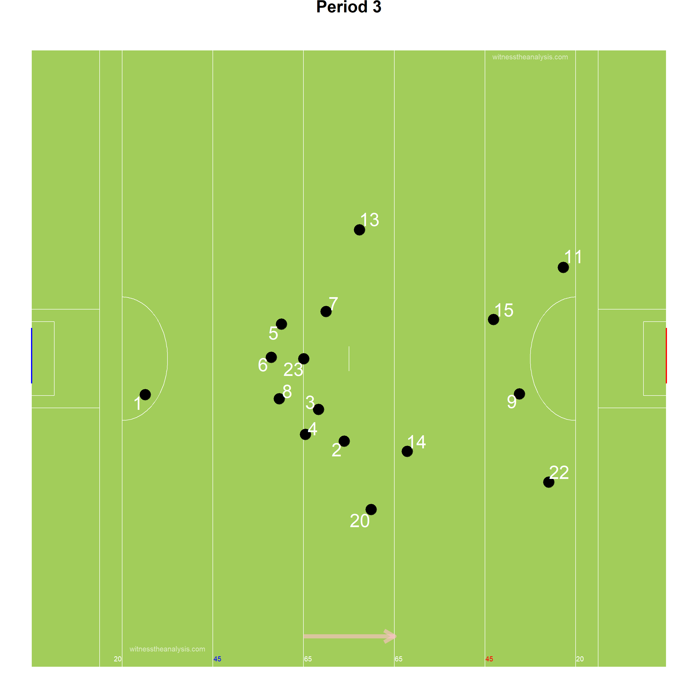
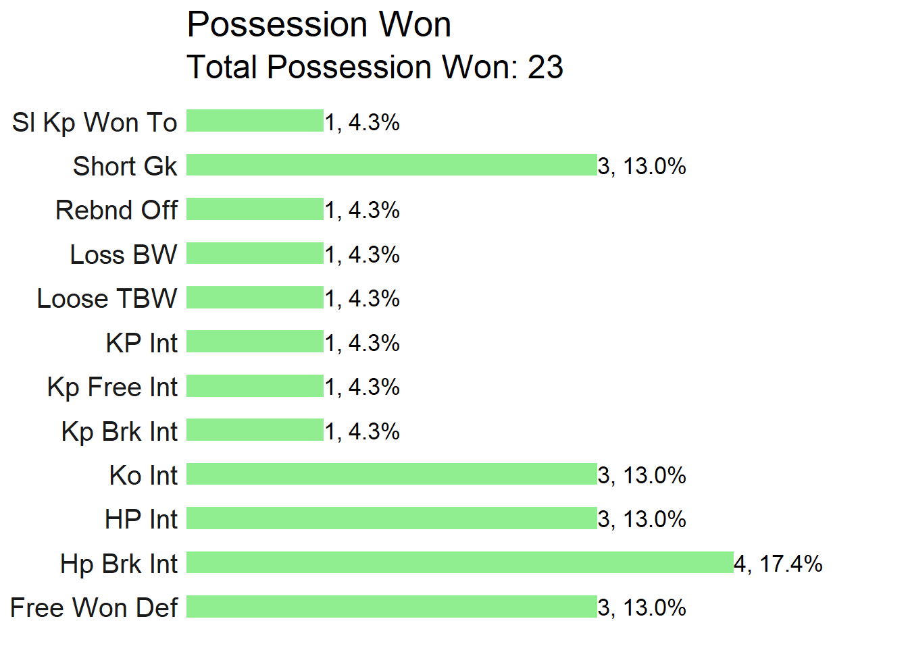
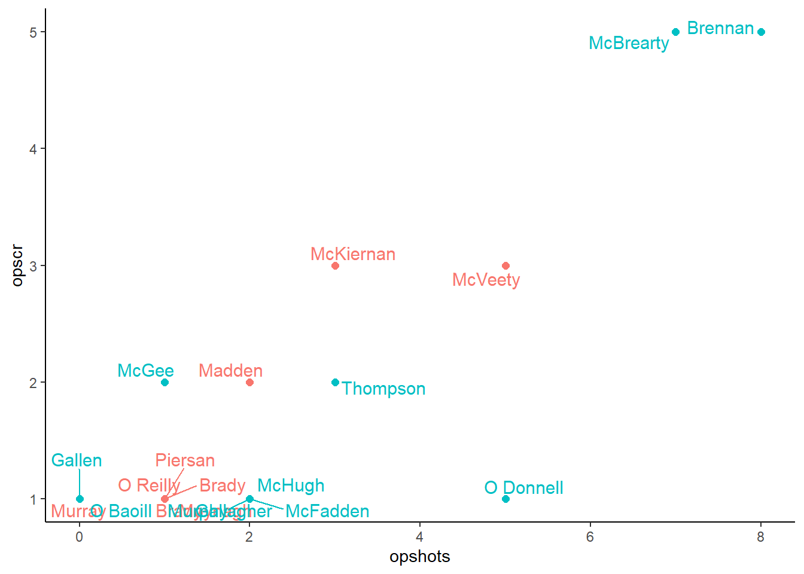
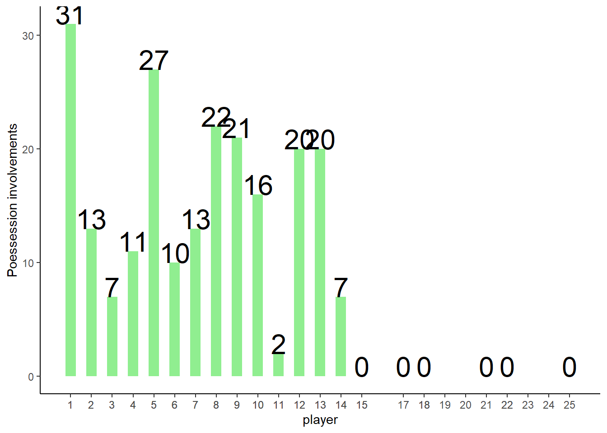

Cavan vs Donegal
Ulster Final - 2019
#Summary ##Starting Line Up (Number, Player, Playing time) ###Cavan
###Donegal 
| Cavan | Donegal |
|---|---|
| McKiernan 0-6 (3fs) | Brennan 1-4 |
| Madden 1-1 | McBrearty 0-5 (1f) |
| Murray 1-0 | Murphy 0-4 (3fs) |
| McVeety 0-3 | Thompson 0-2 |
| Moynagh 0-1 | McGee 0-2 |
| Brady 0-1 | McHugh, 0-1 |
| Pierson 0-1 | Gallagher 0-1 |
| Brady 0-1 | O Baoill 0-1 |
| O’Reilly 0-1 | McFadden 0-1 |
| Mackey 0-1 (1f) | O Donnell 0-1 |
| Langan 0-1 |
| Team | Score.Eff.. | Shots.PerPoss | Scores.PP | Op.Scores.PP | Fk.Score. | Ko. |
|---|---|---|---|---|---|---|
| Cavan | 52% | 63% | 33% | 26% | 67% | 68% |
| Donegal | 66% | 65% | 45% | 38% | 100% | 78% |
##Scoring Timeline
##Score Differential
#Positioning & Possessions ##Average Position by Action ###Cavan ###Game
###Period 
###Donegal ###Game
###Period
##Areas of Play by Possession ###Cavan
###Donegal
##Denisty Map (All Actions) ###Cavan
###Donegal
##Path of Possession
| Lines | X | X.1 | X.2 |
|---|---|---|---|
| Action | Colour | Action | Colour |
| Hand Pass | Black | Kickout Lost | Dark Red |
| Run | Blue | Kick Pass Left | Pink |
| Score | Yellow | Kick Pass Right | White |
| Miss shot | Red | Fk/Mk/Sl Pass | Light Blue |
| Kickout | Gold | Pass Loss | Red |
| Dots | |||
| Action | Colour | ||
| Possession Won | Purple | ||
| Ko/Pass Lost | Red | ||
| Fk Won | Blue | ||
| Fk Won (in 45) | Orange | ||
| Kickout Won | Black |
###Cavan
###Donegal
#General ##Kick Outs ###Cavan
###Kickout Efficiency
###Kickout Network - Cavan
###Donegal
###Kickout Efficiency
###Kickout Network - Donegal 
##Turn overs/Possession Won
###Cavan

###Donegal
##Frees Won ###Cavan
###Donegal
##Frees Loss ###Cavan

###Donegal
#Attacking
##Attacking Stats| Time | Shot | Score | shot | score |
|---|---|---|---|---|
| AttTime | 00:15:47 | 00:07:14 | 00:19:37 | 00:13:15 |
| possave | 00:00:28 | 00:00:24 | 00:00:32 | 00:00:32 |
| phaseave | 00:00:20 | 00:00:18 | 00:00:25 | 00:00:24 |
| Origin Type | ||||
| Shot | Score | shot | score | |
| PW | 17 | 7 | 19 | 16 |
| Ko | 15 | 9 | 8 | 8 |
| Pitch Area Origin | ||||
| Shot | Score | shot | score | |
| Def | 26 | 13 | 17 | 9 |
| Def Mid | 1 | 1 | 2 | 0 |
| Att Mid | 3 | 1 | 9 | 4 |
| Att | 4 | 3 | 4 | 2 |
| Poss Duration | ||||
| secs | Shot | Score | shot | score |
| 0-9 | 2 | 2 | 6 | 4 |
| 10-19 | 10 | 7 | 7 | 3 |
| 20-29 | 8 | 2 | 5 | 6 |
| 30-39 | 6 | 5 | 7 | 5 |
| 40-49 | 2 | 0 | 2 | 2 |
| 50-59 | 2 | 1 | 1 | 0 |
| 60-69 | 3 | 1 | 1 | 2 |
| 70+ | 1 | 0 | 2 | 1 |
| Team | Poss | Phase | All.Shots | All.Scores | Shots.Per.Poss | Scores.PP | Shots.Op | Scores.Op | Score.Eff.. | Op.Scores.PP |
|---|---|---|---|---|---|---|---|---|---|---|
| Cavan | 54 | 69 | 34 | 18 | 63% | 33% | 27 | 14 | 52% | 26% |
| Donegal | 55 | 72 | 39 | 25 | 71% | 45% | 35 | 21 | 60% | 38% |
| Team | Poss Time | Ave Poss Shot | Ave Phase Shot | Ave Poss Scr | Ave Phase Scr | Ave Act Poss | Ave Act Sht | Ave Act Scr | ||
| Cavan | 00:19:19 | 00:00:28 | 00:00:20 | 00:00:24 | 00:00:18 | 9.26 | 13.36363636 | 11.88888889 | ||
| Donegal | 00:26:21 | 00:00:32 | 00:00:25 | 00:00:32 | 00:00:24 | 13.41818182 | 16.34210526 | 16.36 |
| Cavan | Shots | Time..secs. | X | X.1 | X.2 | X.3 | X.4 | X.5 | X.6 |
|---|---|---|---|---|---|---|---|---|---|
| Area | 0-9 | Oct-19 | 20-29 | 30-39 | 40-49 | 50-59 | 60-69 | 70+ | Total |
| Def | 0 | 5 | 8 | 6 | 2 | 2 | 2 | 1 | 26 |
| Def Mid | 0 | 1 | 0 | 0 | 0 | 0 | 0 | 0 | 1 |
| Att Mid | 0 | 2 | 0 | 0 | 0 | 0 | 0 | 0 | 2 |
| Att | 1 | 2 | 0 | 0 | 0 | 0 | 1 | 0 | 4 |
| Cavan | Scores | Time (secs) | |||||||
| Area | 0-9 | Oct-19 | 20-29 | 30-39 | 40-49 | 50-59 | 60-69 | 70+ | Total |
| Def | 0 | 3 | 1 | 4 | 0 | 1 | 1 | 0 | 10 |
| Def Mid | 0 | 1 | 0 | 0 | 0 | 0 | 0 | 0 | 1 |
| Att Mid | 0 | 0 | 0 | 0 | 0 | 0 | 0 | 0 | 0 |
| Att | 1 | 0 | 0 | 0 | 0 | 0 | 0 | 0 | 1 |
| Donegal | Shots | Time (secs) | |||||||
| Area | 0-9 | Oct-19 | 20-29 | 30-39 | 40-49 | 50-59 | 60-69 | 70+ | Total |
| Def | 0 | 5 | 5 | 5 | 3 | 1 | 3 | 2 | 24 |
| Def Mid | 0 | 1 | 0 | 0 | 0 | 0 | 0 | 1 | 2 |
| Att Mid | 3 | 2 | 2 | 1 | 1 | 0 | 0 | 0 | 9 |
| Att | 3 | 0 | 0 | 1 | 0 | 0 | 0 | 0 | 4 |
| Donegal | Scores | Time (secs) | |||||||
| Area | 0-9 | Oct-19 | 20-29 | 30-39 | 40-49 | 50-59 | 60-69 | 70+ | Total |
| Def | 0 | 3 | 5 | 3 | 2 | 0 | 3 | 1 | 17 |
| Def Mid | 0 | 0 | 0 | 0 | 0 | 0 | 0 | 0 | 0 |
| Att Mid | 2 | 1 | 1 | 1 | 0 | 0 | 0 | 0 | 5 |
| Att | 2 | 0 | 0 | 1 | 0 | 0 | 0 | 0 | 3 |
##Open Play Shots - Location & Outcome
###Cavan
###Shot Efficiency - Cavan
###Donegal
###Shot Efficiency - Donegal
##All Shots - Location & Outcome ###Cavan
###Donegal 
##All Shots Origin by Possession ###Cavan (Blue = Score)
###Donegal (Blue = Score)
##Open Play Shot Origin by Phase ###Cavan (Blue = Score)
###Donegal (Blue = Score)
##Shot Network ###Cavan
###Donegal 
##Score Network ###Cavan
###Donegal
#Passing
##All Passes ###Cavan
###Donegal
##Passes into 45 ###Cavan
###Donegal
##Passes Inside Opp 65 ###Cavan
###Donegal
##Pass Network ###Cavan
###In Degree (Number of Players a Player Received a Pass from)
## McVeety Moynagh Rehill McKiernan Smith McLoughlin Reilly Clarke Brady Brady Kiernan Murray Murray Mackey Piersan
## 15 11 10 9 9 7 7 7 7 7 6 6 5 5 4
## Madden Faulkner O Reilly Galligan T Galligan Brady
## 4 3 3 2 2 2###Out Degree (Number of Players a Player Made a Pass to)
## Reilly Moynagh Clarke Rehill McKiernan Kiernan Murray McLoughlin Faulkner Brady McVeety Brady Smith Mackey Galligan
## 11 10 10 10 10 8 8 7 6 6 6 6 6 6 5
## Murray T Galligan Piersan Madden O Reilly Brady
## 5 4 2 2 2 1###Strength in (Number of Passes Received by a Player)
## McVeety McKiernan Moynagh Rehill Smith Kiernan Reilly Clarke Brady Brady McLoughlin Murray Mackey Murray Piersan
## 18 17 16 14 14 12 11 11 11 9 8 8 6 5 4
## Madden Faulkner O Reilly Galligan T Galligan Brady
## 4 3 3 2 2 2###Strength Out (Number of Passes/Shots Made by a Player)
## Moynagh Clarke Rehill McKiernan Reilly Kiernan Smith Brady McVeety McLoughlin Brady Murray Faulkner Murray Mackey
## 19 17 15 13 12 12 11 10 10 9 9 9 6 6 6
## Galligan T Galligan Piersan Madden O Reilly Brady
## 5 4 2 2 2 1###Betweenness Centrality (Flow of Passes through a Player)
## McVeety Moynagh Rehill Murray McKiernan Clarke Reilly Mackey Brady Smith McLoughlin Faulkner Kiernan
## 0.1235688118 0.0723620311 0.0661457442 0.0590986317 0.0534355043 0.0432451613 0.0334760743 0.0304650103 0.0198093156 0.0131861276 0.0129818353 0.0094324097 0.0091067197
## Madden Galligan Piersan O Reilly Brady T Galligan Murray Brady
## 0.0086891383 0.0042494348 0.0036417968 0.0035087719 0.0030043860 0.0020524067 0.0017863026 0.0004385965###Closeness Centrality (How Well connected and central a Player is within the Teams Network)
## McVeety Moynagh Rehill McKiernan Reilly Clarke McLoughlin Smith Brady Murray Kiernan Murray Faulkner Brady Mackey
## 0.8333333 0.7692308 0.7692308 0.7692308 0.7407407 0.7407407 0.7142857 0.7142857 0.6896552 0.6896552 0.6666667 0.6451613 0.6250000 0.6250000 0.6250000
## Galligan Piersan Madden T Galligan O Reilly Brady
## 0.5882353 0.5882353 0.5882353 0.5714286 0.5405405 0.5405405###Entropy (The Unpredictability in who a Player Passes to/Takes shot)
## Brady Clarke McKiernan Reilly Kiernan Smith Brady Moynagh McVeety Murray Rehill McLoughlin Murray Mackey Galligan
## 0.9456248 0.9532298 0.9549515 0.9596870 0.9605798 0.9606795 0.9654072 0.9660072 0.9683805 0.9692074 0.9743940 0.9808704 0.9866600 0.9881091 1.0000000
## Faulkner Piersan Madden T Galligan O Reilly Brady
## 1.0000000 1.0000000 1.0000000 1.0000000 1.0000000 1.0000000###Global clustering coefficient (Groups of Players who pass to each other)
## [1] 0.5953307###eigen_centrality (How well connected the well connected are)
## Moynagh Rehill Clarke McKiernan Kiernan Smith McVeety Brady Reilly Brady McLoughlin Murray Murray Mackey Faulkner
## 1.00000000 0.86360245 0.86010135 0.85126483 0.80474202 0.79495975 0.74218021 0.69195233 0.69180859 0.56316164 0.52143286 0.40362288 0.35082889 0.26664015 0.23522205
## Galligan Piersan Madden T Galligan Brady O Reilly
## 0.19914371 0.17994764 0.14737480 0.14287842 0.08770717 0.07974505##Donegal
###In Degree (Number of Players a Player Received a Pass from)
## McHugh McFadden McBrearty Murphy Brennan McGee Gallagher Thompson O Donnell Langan O Baoill
## 15 15 13 13 11 10 8 8 8 8 8
## McMenamin McGrath McFadden Ferry Brennan McGee McGlynn Patton Gallen McLoone Ward
## 7 6 6 6 5 5 3 1 1 0###Out Degree (Number of Players a Player Made a Pass to)
## McFadden Murphy McHugh Gallagher Thompson McGee O Donnell Langan McGlynn McGee McBrearty
## 14 13 11 11 10 9 9 9 9 8 8
## McGrath McMenamin Brennan Patton McFadden Ferry O Baoill Brennan McLoone Gallen Ward
## 7 7 7 6 6 6 5 2 0 0###Strength in (Number of Passes Received by a Player)
## McFadden McHugh McBrearty McGee Brennan Gallagher Thompson Murphy O Donnell Langan McGlynn
## 33 31 24 19 19 18 17 17 16 12 11
## McMenamin O Baoill Brennan McGrath McFadden Ferry Patton McGee Gallen McLoone Ward
## 10 9 8 7 7 5 5 1 1 0###Strength Out (Number of Passes/Shots Made by a Player)
## McFadden McHugh Murphy McGee Gallagher McBrearty Thompson Langan McMenamin McGrath O Donnell
## 37 32 21 20 17 15 14 14 13 12 12
## Brennan McGlynn O Baoill McGee Patton McFadden Ferry Brennan McLoone Gallen Ward
## 11 11 9 8 7 7 7 3 0 0###Betweenness Centrality (Flow of Passes through a Player)
## McBrearty McFadden Gallagher Murphy McHugh Brennan O Baoill Brennan McMenamin McGee McGrath
## 0.1109515746 0.1020887630 0.0434247463 0.0338473041 0.0336692060 0.0193966181 0.0126800427 0.0125424382 0.0115947065 0.0087881855 0.0085410831
## McGlynn Langan Thompson McGee McFadden Ferry Patton O Donnell McLoone Gallen Ward
## 0.0082054787 0.0079183332 0.0078850461 0.0076973684 0.0050997049 0.0040125153 0.0033572903 0.0004048583 0.0000000000 0.0000000000###Closeness Centrality (How Well connected and central a Player is within the Teams Network)
## McFadden McHugh Murphy McBrearty Gallagher Brennan Thompson Langan O Baoill McGee O Donnell
## 0.48780488 0.46511628 0.46511628 0.45454545 0.44444444 0.43478261 0.42553191 0.42553191 0.42553191 0.41666667 0.41666667
## Brennan McGrath McMenamin McGee McFadden Ferry McGlynn Patton McLoone Gallen Ward
## 0.41666667 0.40816327 0.40816327 0.40000000 0.40000000 0.39215686 0.37735849 0.35087719 0.32258065 0.04761905###Entropy (The Unpredictability in who a Player Passes to/Takes shot)
## McHugh McFadden McBrearty McGee Gallagher McLoone Thompson Patton McGrath Langan McGlynn
## 0.9236997 0.9311516 0.9352842 0.9431832 0.9450347 0.9463946 0.9473418 0.9533523 0.9558017 0.9617724 0.9622252
## O Donnell Murphy O Baoill Brennan McMenamin Brennan McFadden Ferry McGee
## 0.9641090 0.9652047 0.9674807 0.9728148 0.9739392 0.9751767 0.9823368 1.0000000###Global clustering coefficient (Groups of Players who pass to each other)
## [1] 0.7113402###eigen_centrality (How well connected the well connected are)
## McFadden McHugh McGee Gallagher McBrearty Murphy Thompson O Donnell Brennan Langan McGlynn
## 1.000000000 0.963206289 0.652331861 0.585630845 0.573063806 0.515497444 0.487632867 0.424742532 0.417049394 0.404178006 0.369996607
## McMenamin McGrath O Baoill McFadden Ferry McGee Patton Brennan McLoone Gallen Ward
## 0.327586605 0.310447197 0.265379142 0.229461529 0.206102522 0.198885702 0.196526281 0.052927144 0.015328367 0.005511299#Player Stats ##Player On Ball Possession (Number, Player, Total) ###Cavan
###Donegal
##Posessions Per Playing Time
##Player % involvement and shot efficiency| Team | ply | opshots | Totteamshot | opscr | Totteamscr | convrate |
|---|---|---|---|---|---|---|
| Cavan | Galligan | 0 | 0% | 0 | 0% |
|
| Cavan | McLoughlin | 0 | 0% | 0 | 0% |
|
| Cavan | Faulkner | 0 | 0% | 0 | 0% |
|
| Cavan | Moynagh | 2 | 8% | 1 | 11% | 50% |
| Cavan | Reilly | 1 | 4% | 0 | 0% | 0% |
| Cavan | Clarke | 0 | 0% | 0 | 0% |
|
| Cavan | Rehill | 2 | 8% | 0 | 0% | 0% |
| Cavan | Brady | 1 | 4% | 1 | 11% | 100% |
| Cavan | McKiernan | 3 | 13% | 3 | 33% | 100% |
| Cavan | Kiernan | 1 | 4% | 0 | 0% | 0% |
| Cavan | McVeety | 5 | 21% | 3 | 33% | 60% |
| Cavan | Murray | 0 | 0% | 0 | 0% |
|
| Cavan | Brady | 1 | 4% | 0 | 0% | 0% |
| Cavan | Piersan | 1 | 4% | 1 | 11% | 100% |
| Cavan | Smith | 3 | 13% | 0 | 0% | 0% |
| Cavan | Murray | 0 | 0% | 1 | 11% |
|
| Cavan | Mackey | 0 | 0% | 0 | 0% |
|
| Cavan | Madden | 2 | 8% | 2 | 22% | 100% |
| Cavan | T Galligan | 0 | 0% | 0 | 0% |
|
| Cavan | O Reilly | 1 | 4% | 1 | 11% | 100% |
| Cavan | Brady | 1 | 4% | 1 | 11% | 100% |
| Team | ply | opshots | Totteamshot | opscr | Totteamscr | convrate |
|---|---|---|---|---|---|---|
| Donegal | Patton | 0 | 0% | 0 | 0% |
|
| Donegal | McGrath | 0 | 0% | 0 | 0% |
|
| Donegal | McGee | 0 | 0% | 0 | 0% |
|
| Donegal | McMenamin | 0 | 0% | 0 | 0% |
|
| Donegal | McHugh | 2 | 6% | 1 | 5% | 50% |
| Donegal | McFadden Ferry | 0 | 0% | 0 | 0% |
|
| Donegal | Gallagher | 2 | 6% | 1 | 5% | 50% |
| Donegal | McFadden | 2 | 6% | 1 | 5% | 50% |
| Donegal | McGee | 1 | 3% | 2 | 11% | 200% |
| Donegal | Thompson | 3 | 9% | 2 | 11% | 67% |
| Donegal | O Donnell | 5 | 16% | 1 | 5% | 20% |
| Donegal | Brennan | 8 | 25% | 5 | 26% | 63% |
| Donegal | McBrearty | 7 | 22% | 5 | 26% | 71% |
| Donegal | Murphy | 2 | 6% | 1 | 5% | 50% |
| Donegal | Langan | 0 | 0% | 0 | 0% |
|
| Donegal | O Baoill | 0 | 0% | 1 | 5% |
|
| Donegal | McGlynn | 0 | 0% | 0 | 0% |
|
| Donegal | Brennan | 0 | 0% | 0 | 0% |
|
| Donegal | Gallen | 0 | 0% | 1 | 5% |
|
| Donegal | McLoone | 0 | 0% | 0 | 0% |
|
##Open Play Shots vs Play Time
##Open Play Scores vs Play Time 
##Open Play Shots vs Open Play Score 
##Player Possession Involvement ###Cavan
###Donegal 
##Player Shot Involvement ###Cavan
###Donegal
##Player Score Involvement ###Cavan
###Donegal
##Actions and Zones ##By Period ###Cavan
###Donegal
##Zones Frequency ###Cavan
###Donegal